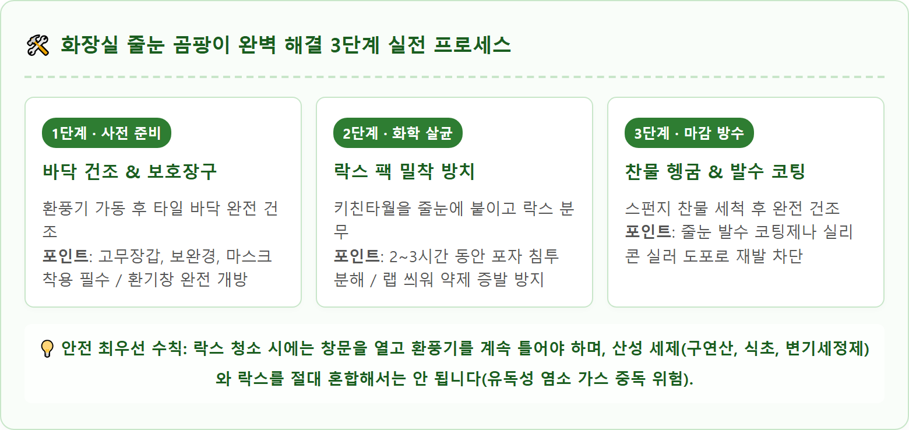
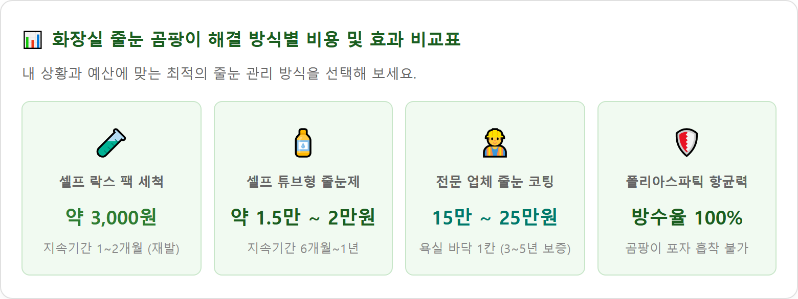

A crisp, realistic DIY home improvement and cleaning photograph focusing on modern bathroom floor tiles. A gloved hand wearing yellow rubber safety gloves carefully applies a paper towel soaked in cleaning solution along the grout lines between light gray ceramic tiles. Half of the grout line shows a clean, sparkling white restored appearance, while the other half displays dark mildew stains, illustrating a clear before-and-after comparison. In the background on the dry clean tile floor sits a spray bottle and a small bottle of sealant. Bright natural bathroom lighting, sharp macro focus on the tile grout texture, photorealistic, 8k resolution, informative lifestyle magazine style, 1:1 aspect ratio.
신축 아파트나 빌라 욕실에 시공되는 기본 줄눈은 대부분 백시멘트(White Portland Cement)를 사용합니다.
백시멘트는 가격이 저렴하고 시공이 간편하지만, 굳은 후 표면에 현미경으로 관찰해야 보일 만큼 수많은 미세 기공(Pore)이 형성되는 치명적인 약점을 안고 있습니다.
매일 샤워할 때 튀는 비눗물 속 유지방과 사람의 피부 각질, 샴푸 잔여물이 이 미세 기공 속으로 스며들며, 환기가 조금만 부족해도 고온다습한 욕실 환경에서 클라도스포리움(흑색 곰팡이)과 붉은 효모균이 기공 깊숙한 곳까지 뿌리를 내리게 됩니다.
따라서 수세미나 철솔로 표면을 박박 문지르면 시멘트 표면만 깎여 나가 기공이 더욱 넓어지고, 다음번 곰팡이가 더 깊고 빠르게 번식하는 악순환이 발생합니다.
줄눈 표면에 번진 검은 곰팡이는 염소계 표백제(차아염소산나트륨)의 화학적 산화력을 이용해 포자 자체를 분해해야 영구 사멸합니다. 문지르지 않고 불리는 '밀착 락스 팩 공법'이 가장 강력합니다.

시중에는 다양한 곰팡이 제거 세제들이 판매되고 있습니다. 세제의 화학적 특성에 따라 최적의 사용처가 다릅니다.
| 세제 종류 | 주요 성분 및 원리 | 장점 | 단점 및 주의사항 |
|---|---|---|---|
| 희석 락스액 ★ 가성비 최강 |
차아염소산나트륨 (강력한 산화 표백) |
1통 2,000원으로 비용 부담 없음. 곰팡이 포자 사멸력 1위 | 자극적인 염소 냄새, 액체형이라 벽면 타일 흘러내림(키친타월 필수) |
| 젤형 곰팡이 제거제 ★ 벽면·실리콘용 |
고농도 염소계 젤 | 뾰족한 노즐로 줄눈과 실리콘에 직접 도포. 벽면에도 흘러내리지 않음 | 바닥 전체를 시공하기에는 단가가 비쌈 (개당 5,000~8,000원) |
| 과탄산소다 페이스트 ★ 친환경 산소계 |
과탄산나트륨 (활성산소 표백) |
염소 가스 냄새가 전혀 없음. 묵은 기름때와 누런 피지 오염에 효과적 | 흑곰팡이 뿌리 사멸력은 락스보다 약함. 뜨거운 물에 녹여 반죽해야 함 |
락스 팩을 반나절 이상 붙여두었는데도 줄눈이 여전히 누렇거나 거무스름하다면 두 가지 원인 중 하나입니다.
첫째, 곰팡이가 백시멘트 기공 3mm 이상 속까지 파고들어 시멘트 자체를 변색시킨 경우입니다.
둘째, 수돗물 속 녹물(철분)과 미네랄이 알칼리성 시멘트와 결합하여 황변(Yellowing)을 일으킨 화학적 착색입니다.
이 단계에 도달하면 아무리 강한 세제를 부어도 색상이 복원되지 않습니다. 이때는 기존 백시멘트 표면을 긁어내고 새 줄눈재를 채우거나 코팅하는 리폼 작업으로 넘어가야 합니다.
기존 타일을 뜯지 않고 가장 저렴하게 새집처럼 만드는 방법은 마트나 온라인에서 판매하는 튜브형 줄눈 보수제(1만~2만 원)를 활용하는 것입니다.

셀프 작업과 전문 업체 시공은 비용과 내구성에서 확연한 차이를 보입니다. 거주 기간과 예산에 맞춰 결정해야 합니다.
| 구분 항목 | 셀프 락스 팩 세척 | 셀프 튜브 보수제 (DIY) | 전문 줄눈 코팅 시공 (업체) |
|---|---|---|---|
| 예상 소요 비용 | 약 3,000 ~ 5,000원 | 약 15,000 ~ 25,000원 (재료비) | 바닥 1칸: 15만 ~ 25만 원 (벽면 전체 추가 시 30만~45만 원) |
| 소요 작업 시간 | 약 3시간 (방치 시간 포함) | 약 2~3시간 (정밀 수작업) | 약 3~4시간 (전문가 1~2인) |
| 난이도 / 노동 강도 | 매우 낮음 (뿌려두면 끝) | 중급 (허리·손목 통증, 손기술 필요) | 없음 (업체 전담 시공) |
| 방수 및 곰팡이 방지 수명 | 1~2개월 (습기 차면 즉시 재발) | 6개월 ~ 1년 (탈락 및 변색 위험) | 최소 3년 ~ 5년 이상 영구적 유지 |
| 추천 대상 | 전월세 임차인, 단기 거주자 | 비용 절약을 원하는 손재주 있는 분 | 자가 거주자, 신규 입주, 곰팡이 해방 희망자 |
전문 줄눈 시공 업체가 사용하는 고급 자재는 과거의 에폭시를 넘어 폴리아스파틱(Polyaspartic)계 수지입니다.
• 완벽한 비흡수 방수성: 유리알처럼 매끄럽게 경화되어 물과 오염물질이 내부로 절대 흡수되지 않습니다. 곰팡이가 뿌리를 내릴 수 없어 곰팡이 발생률이 0%에 수렴합니다.
• 우수한 신축성과 내구성: 타일의 미세한 수축 팽창에도 깨지거나 갈라지지 않으며, 락스나 락스 세제에도 탈색되지 않습니다.
• 업체 선정 체크리스트: 시공 계약 전 반드시 ① 기존 백시멘트를 기계나 전용 공구로 '깊이 3~5mm' 정직하게 파내는지(단순 덧방 시 100% 들뜸 탈락), ② 독일·스위스산 정품 친환경 안료 및 수지를 사용하는지, ③ 최소 1년 무상 A/S 보증서를 발급하는지 전수 확인해야 합니다.
아무리 깨끗이 청소하고 줄눈을 새로 시공했더라도 습기 관리가 안 되면 표면에 곰팡이가 다시 엉겨 붙습니다.
화장실은 좁고 밀폐된 공간이므로 세정 작업을 진행할 때 안전 수칙을 철저히 지켜야 합니다.